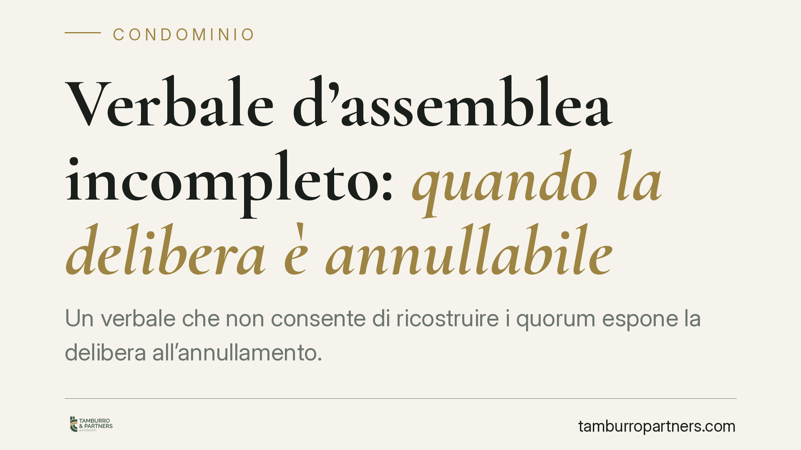

Verbale d'assemblea incompleto: quando la delibera è annullabile
Un verbale che non consente di ricostruire i quorum espone la delibera all'annullamento. È il tema affrontato da un recente orientamento di merito che ha censurato un verbale privo di millesimi, distinzione tra presenti e delegati e indicazione delle maggioranze. Un difetto formale che, nella pratica condominiale, si traduce spesso in contenzioso.

Il caso
Un condòmino ha impugnato una delibera assembleare lamentando l'impossibilità di verificare i quorum previsti dall'art. 1136 c.c. Il verbale non riportava i valori millesimali dei partecipanti, non distingueva i presenti dai delegati e ometteva l'indicazione delle maggioranze con cui le decisioni erano state assunte.
Secondo l'orientamento di merito richiamato dalla fonte, un verbale così redatto non permette di controllare a posteriori se l'assemblea fosse validamente costituita e se le delibere abbiano raggiunto i quorum di legge. Da qui l'annullamento.
> Nota redazionale. Gli estremi puntuali della pronuncia citata dalla fonte (numero, anno e sezione) non risultano ad oggi verificabili in modo autonomo. Riportiamo pertanto il principio come espressione di un orientamento di merito, in attesa di conferma degli estremi ufficiali prima di ogni utilizzo in sede processuale.
Inquadramento normativo
L'art. 1136 c.c. fissa i quorum costitutivi e deliberativi dell'assemblea, calcolati in base al numero dei partecipanti e ai valori millesimali. L'art. 1137 c.c. disciplina l'impugnazione delle delibere. L'art. 67 disp. att. c.c. regola le deleghe e i relativi limiti.
Il verbale è il documento che dà prova dello svolgimento e dell'esito dell'assemblea. Secondo la giurisprudenza consolidata, deve avere un contenuto minimo che consenta di ricostruire: chi ha partecipato (in proprio o per delega), i millesimi rappresentati, l'esito delle votazioni e le maggioranze raggiunte. In mancanza di questi elementi, il controllo sui quorum diventa impossibile.
Sul regime del vizio occorre precisione. Le Sezioni Unite della Cassazione (sent. n. 4806/2005) hanno tracciato il discrimine tra nullità e annullabilità delle delibere: sono nulle quelle prive degli elementi essenziali, con oggetto impossibile o illecito, o incidenti sui diritti individuali dei condòmini; sono annullabili — tra le altre — quelle affette da vizi procedimentali e formali, compresi i difetti del verbale che impediscono la verifica dei quorum. La carenza documentale, quindi, non travolge la delibera come nulla: la rende annullabile, con le conseguenze in tema di termini e legittimazione che ne derivano.
Implicazioni pratiche
La distinzione tra vizio del verbale e merito della decisione è centrale. Qui non si discute se la scelta dell'assemblea fosse opportuna: si contesta che il verbale non permetta di sapere se quella scelta sia stata assunta legittimamente. Il difetto è formale, ma le sue conseguenze sono sostanziali.
Essendo la delibera annullabile e non nulla, valgono i termini stringenti dell'art. 1137 c.c. Il ricorso va proposto entro trenta giorni, che decorrono:
- dalla data della delibera per i condòmini presenti dissenzienti o astenuti;
- dalla comunicazione del verbale per i condòmini assenti.
Decorso il termine senza impugnazione, la delibera si consolida e i vizi formali non sono più deducibili. La brevità del termine impone di attivarsi subito, senza attendere.
Per l'amministratore, la lezione è chiara: la redazione accurata del verbale non è un adempimento burocratico, ma la prima difesa contro il contenzioso. Un verbale completo rende verificabili i quorum e riduce lo spazio per le impugnazioni.
Cosa fare in concreto
- Verificate i termini appena ricevete il verbale. Individuate se rientrate tra i presenti o gli assenti: il dies a quo cambia. Trenta giorni passano in fretta.
- Controllate il contenuto minimo del verbale. Devono risultare presenti e delegati distinti, millesimi rappresentati, esito delle votazioni e maggioranze raggiunte per ciascun punto.
- Conservate la comunicazione del verbale. Per gli assenti, la data di ricezione è decisiva per il calcolo del termine: annotatela e custodite la prova.
- Non confondete forma e merito. Il vizio del verbale è autonomo rispetto alla bontà della decisione: consigliamo di valutare entrambi i profili con l'assistenza di un legale prima di impugnare.
- Amministratori: adottate un format standard di verbale che includa sempre gli elementi richiesti dalla giurisprudenza, così da ridurre il rischio di annullamento.
La completezza del verbale è, in definitiva, una questione di prova. Chi non la cura oggi rischia di trovarsi domani con una delibera privata di effetti per una semplice omissione.
Ogni condominio ha una storia a sé.
Se gestisci un'amministrazione e vuoi un confronto su una specifica questione condominiale, scrivi allo studio. Ti rispondiamo entro un giorno lavorativo.